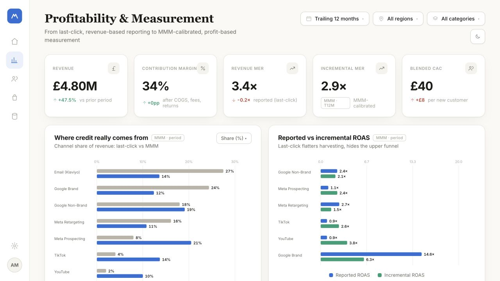
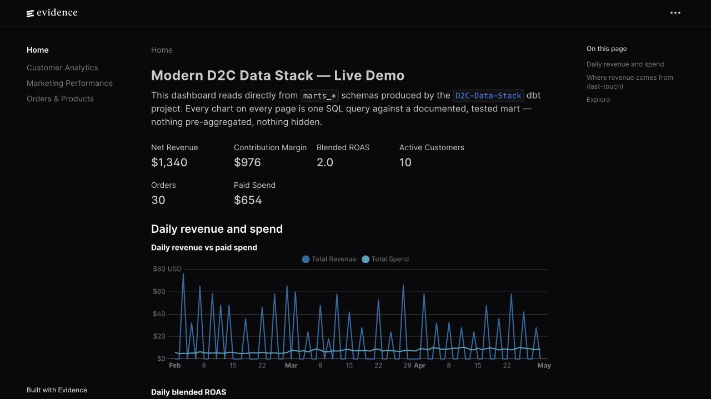
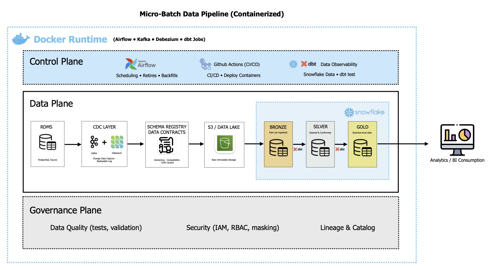

Marketing profitability dashboard
Compares reported and incremental return on advertising spend, contribution margin and acquisition cost. Built to examine which channels deserve credit before allocating budget.
WORK SAMPLES
Dashboards, SQL models and data pipelines built independently. The samples use public, synthetic or illustrative data; workplace accomplishments are covered in Experience.

Compares reported and incremental return on advertising spend, contribution margin and acquisition cost. Built to examine which channels deserve credit before allocating budget.

Transforms Shopify, Klaviyo, Meta Ads and GA4 data into shared acquisition, retention and profitability measures. The dashboard queries tested dbt models; SQL definitions and sample data are available in the repository.

Captures PostgreSQL changes with Debezium and Kafka, stores Parquet in MinIO and loads Snowflake through Airflow. dbt models preserve customer and account history for analysis. The reference build uses generated banking data.
A Snowflake and dbt pipeline orchestrated with Airflow and containerised with Docker.
Snowflake · dbt · Airflow · DockerETL, dimensional modelling and an analytics layer built in SQL Server.
SQL Server · ETL · dimensional modellingA reference pipeline using public Elliptic transaction data, lakehouse layers and versioned investigation alerts.
Streaming · graph analysis · machine learningReference models for marketing measurement, contribution margin and customer value.
Python · dbt · marketing mix modellingA study in video representation learning.
Research · machine learning